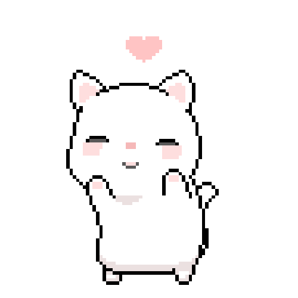
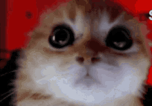

Согласен ли ты провести со мной
всю свою жизнь в горе и в любви?

Ты чо припух?????

Тогда это письмо для тебя
ГОТОВЬ ГЛАЗКИ, ТУТ МНОГО ТЕКСТА!!!!))
Дорогой Никита.
Я даже не знаю, с чего правильно начать это письмо, потому что мне кажется, что никакого количества слов не хватит, чтобы объяснить тебе, насколько сильно я тебя люблю и насколько много ты для меня значишь. Мы столько всего пережили вместе. Столько эмоций, столько слёз и радости, столько воспоминаний, столько моментов, которые навсегда останутся частью меня. И знаешь, несмотря на все трудности, ссоры и недопонимания, я ни на секунду не переставала дорожить тобой. Ты стал для меня гораздо большим, чем просто человеком, которого я люблю. Ты стал человеком, с которым мне хочется делить свою жизнь, рассказывать о самых незначительных мелочах, смеяться над глупостями и просто молчать, зная, что мне больше ничего не нужно. Я безумно благодарна тебе за всё, что ты сделал для меня. За каждый вечер, проведённый со мной, за каждую прочитанную сказку на ночь, за то, что учил меня играть в Доту и терпел все мои нервные срывы, за разговоры, шутки и моменты, когда ты просто был рядом. Даже самые обычные вещи с тобой почему-то становились для меня особенными. Я очень ценю то, что ты принял меня обратно, что попытался понять и дал нам возможность попробовать ещё раз. Для меня это действительно много значит. Мне хочется чтобы ты знал: я не воспринимаю наши отношения как что-то временное. Я не хочу просто провести с тобой какое-то время, пока нам хорошо, а потом разойтись каждый своей дорогой. Я хочу будущего с тобой. Настоящего, общего, нашего. И больше всего меня мучает то, что сейчас между нами столько километров. Иногда мне ужасно не хватает даже самых простых вещей. Возможности подойти к тебе, обнять, поцеловать, поправить тебе волосы, лечь рядом после тяжёлого дня или просто взять тебя за руку. Мне хочется не смотреть на тебя через экран, а видеть тебя рядом. Не считать дни до следующей встречи, а просыпаться и понимать, что нам больше не нужно никуда торопиться, потому что мы уже вместе. Расстояние иногда кажется совершенно несправедливым: столько всего хочется тебе дать, столько нежности накопилось внутри, а я могу передать её только через сообщения и звонки. Я часто представляю нашу будущую жизнь. Как однажды мы наконец-то будем жить вместе. Как будем выбирать мебель, спорить о том, что приготовить на ужин, ходить за продуктами и смеяться над какой-нибудь ерундой. Как заведём маленького котёнка, которому будем покупать игрушки и фотографировать каждый его сон, прям как я фотографирую Муську, а потом ещё и мальтипу, который будет носиться по квартире и требовать нашего внимания. Как будем возвращаться домой друг к другу, обнимать после рабочего дня, смотреть фильмы, играть, путешествовать и создавать свои маленькие семейные традиции. Мне хочется однажды посмотреть на тебя и осознать, что всё это больше не просто мои фантазии. Что человек, по которому я так сильно скучала, теперь лежит рядом со мной. Что мы прошли через расстояние, через сложные периоды и через все препятствия, но всё-таки построили то самое маленькое счастье, о котором когда-то мечтали. Я хочу просыпаться рядом с тобой, видеть твоё сонное лицо и прижиматься к тебе так сильно, чтобы ты дышать не мог, хе-хе. Хочу засыпать в твоих объятиях, чувствовать себя спокойно и знать, что мне не нужно скучать по тебе, потому что ты уже здесь. Хочу заботиться о тебе, радовать тебя, поддерживать, когда тебе тяжело, и быть человеком, к которому ты всегда можешь прийти со своими переживаниями. Но, солнышко моё, я тоже хочу чувствовать, что всё это нужно не только мне. Я правда стараюсь быть снисходительнее, учиться понимать тебя, спокойнее реагировать и находить компромиссы. Я знаю, что у нас обоих есть свои недостатки, свои эмоции и свои трудности. Но, пожалуйста, пойми и меня. Я не железная. Я такой же человек, у меня тоже есть чувства, страхи и переживания. Мне тоже бывает больно, мне тоже иногда нужна поддержка, нежность и простое понимание. Я не хочу постоянно выяснять отношения или доказывать, что мне что-то неприятно. Я хочу чувствовать, что мы одна команда, что мы не друг против друга, а вместе против наших проблем. Я не прошу тебя быть идеальным. Я и сама далеко не идеальна. Я просто хочу, чтобы мы оба старались. Чтобы мы не обесценивали чувства друг друга, не сдавались при первых трудностях и помнили, почему когда-то выбрали именно друг друга. Мне хочется, чтобы рядом со мной ты тоже чувствовал себя любимым, нужным и важным. Я хочу быть твоей семьёй, коть. Хочу, чтобы однажды у нас был свой дом, свои привычки, свои маленькие традиции, наши питомцы и куча общих воспоминаний. Хочу пройти с тобой через множество лет, увидеть, как мы меняемся, взрослеем, достигаем своих целей и всё равно продолжаем выбирать друг друга. Хочу однажды вспоминать наше расстояние и улыбаться от мысли, сколько всего мы преодолели. Я очень дорожу тобой. Иногда мне кажется, что ты даже не представляешь, сколько места занимаешь в моих мыслях и в моём сердце. Я люблю тебя не только за приятные моменты и красивые слова. Я люблю тебя как человека, со всеми твоими особенностями, привычками, странностями и даже теми мелочами, над которыми иногда ворчу. Мне не нужен идеальный Никита. Мне нужен мой Никита, моя бусинка которая тоже хочет строить со мной что-то настоящее. И если у меня есть одно самое большое желание, то оно очень простое: чтобы однажды расстояние осталось далеко позади, а впереди у нас была целая жизнь, которую мы будем проживать вместе. Я очень тебя люблю. Больше, чем иногда умею показать словами. И я очень надеюсь, что однажды все наши "хочу" превратятся в наше "у нас есть".Твоя Рита
Я люблю тебя
иди в жопу